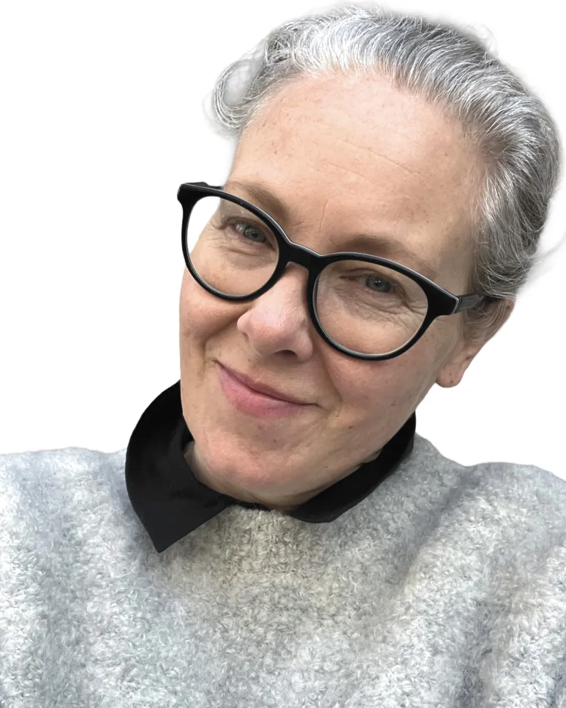

Om Gry
Jeg er uddannet psykoterapeut med base i København.
Mit arbejde er præget af rolig opmærksomhed, tålmodighed og respekt for den person eller det samarbejde, jeg møder.
Jeg ser terapi som et sted, hvor der er tid til at standse op, lytte omhyggeligt og forstå det, der kan være svært at se klart, når man står midt i det.

Min baggrund
Min faglige baggrund omfatter arbejde inden for socialpsykiatri, rådgivning og terapeutisk støtte til mennesker berørt af alkohol, stoffer og afhængighed.
De områder har givet mig erfaring med mennesker i mange forskellige livssituationer, herunder perioder præget af stress, usikkerhed, sorg, relationelle vanskeligheder, afhængighed, skam, overvældelse og tilbagevendende mønstre, som kan være svære at ændre alene.
De har også præget den måde, jeg arbejder på: roligt, omhyggeligt og med opmærksomhed på det, der faktisk er til stede, ikke kun det, der er lettest at forklare.
Sådan møder jeg mennesker
Det er vigtigt for mig, at terapi ikke bliver en præstation.
Du behøver ikke komme med en færdig forklaring på, hvad der er galt. Du behøver ikke kende de rigtige ord. Ofte er en del af arbejdet netop at finde et klarere sprog for noget, der har føltes forvirrende, tungt eller svært at bære alene.
I samtalerne lytter jeg både efter det, der bliver sagt, og det, der kan være sværere at sige. Vi arbejder i et tempo, hvor forståelsen kan udvikle sig uden unødigt pres.
Individuelt og relationelt arbejde
Jeg arbejder med mennesker, der ønsker støtte til at forstå det, der er blevet svært i deres liv.
Jeg arbejder også med vigtige professionelle samarbejder, hvor kommunikation, tillid eller fælles ansvar er kommet under pres.
I begge former for arbejde er mit fokus at skabe en rolig, alvorlig og respektfuld ramme, hvor mennesker kan tale tydeligere, lytte mere opmærksomt og begynde at forstå, hvad der kan være brug for nu.